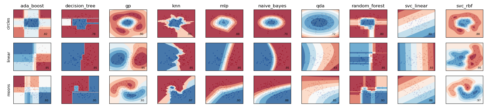

Configure and Run scikit-learn’s Classifier Comparison Example#
Note
This How-To guide closely mirrors scikit-learn’s Classifier Comparison example.
This guide will demonstrate how to hydra-zen with scikit-learn to configure and run reproducible experiments. Specifically, we will demonstrate how to configure multiple scikit-learn datasets and classifiers, and how to launch multiple classifer-fitting experiments using Hydra’s CLI.
This How-To consists of the following steps:
Configure multiple scikit-learn datasets and classifiers.
Create a task function to load data, fit a classifier, and visualize the fit.
Save the figure in the local experiment directory.
Gather the saved figures after executing the experiments and plot the final result.
Configuring and Building an Experiment#
Attention
hydra-zen’s config store possesses auto-config capabilities, which we will utilize below. Note that the following patterns are equivalent
from hydra_zen import store
def func(x, y):
...
store(func, x=2, y=3)
We use this auto-config capability simply as a means of making our code more concise.
Below we create configs for three datasets and ten classifiers and add them to hydra-zen's config store.
After building the configs we define the task function that utilizes these datasets and classifiers.
my_app.py#from typing import Callable, Tuple
import matplotlib.pyplot as plt
import numpy as np
from matplotlib.colors import ListedColormap
from sklearn.base import BaseEstimator
from sklearn.datasets import make_circles, make_classification, make_moons
from sklearn.discriminant_analysis import QuadraticDiscriminantAnalysis
from sklearn.ensemble import AdaBoostClassifier, RandomForestClassifier
from sklearn.gaussian_process import GaussianProcessClassifier
from sklearn.gaussian_process.kernels import RBF
from sklearn.inspection import DecisionBoundaryDisplay
from sklearn.model_selection import train_test_split
from sklearn.naive_bayes import GaussianNB
from sklearn.neighbors import KNeighborsClassifier
from sklearn.neural_network import MLPClassifier
from sklearn.pipeline import make_pipeline
from sklearn.preprocessing import StandardScaler
from sklearn.svm import SVC
from sklearn.tree import DecisionTreeClassifier
from hydra_zen import builds, load_from_yaml, make_config, store, zen
# 1. Configuring multiple datasets and classifiers
###############
# Classifiers #
###############
# Created configurations for various classifiers and store
# the configs in hydra-zen's config store.
classifier_store = store(group="classifier")
classifier_store(KNeighborsClassifier, n_neighbors=3, name="knn")
classifier_store(SVC, kernel="linear", C=0.025, name="svc_linear")
classifier_store(SVC, gamma=2, C=1, name="svc_rbf")
classifier_store(
GaussianProcessClassifier,
kernel=builds(RBF, length_scale=1.0),
name="gp",
)
classifier_store(DecisionTreeClassifier, max_depth=5, name="decision_tree")
classifier_store(
RandomForestClassifier,
max_depth=5,
n_estimators=10,
max_features=1,
name="random_forest",
)
classifier_store(MLPClassifier, alpha=1, max_iter=1000, name="mlp")
classifier_store(AdaBoostClassifier, name="ada_boost")
classifier_store(GaussianNB, name="naive_bayes")
classifier_store(QuadraticDiscriminantAnalysis, name="qda")
############
# Datasets #
############
# Created configurations for various datasets and store
# the configs in hydra-zen's config store.
dataset_store = store(group="dataset")
# For the linear dataset, add a wrapper that
# randomly spaces our the data
def add_random_scattering(make_dataset):
def wraps(*args, **kwargs):
X, y = make_dataset(*args, **kwargs)
rng = np.random.RandomState(2)
X += 2 * rng.uniform(size=X.shape)
return X, y
return wraps
dataset_store(
make_classification,
zen_wrappers=add_random_scattering, # <- apply wrapper here
zen_partial=True,
n_features=2,
n_redundant=0,
n_informative=2,
random_state=1,
n_clusters_per_class=1,
name="linear",
)
dataset_store(
make_moons,
zen_partial=True,
noise=0.3,
random_state=0,
name="moons",
)
dataset_store(
make_circles,
zen_partial=True,
noise=0.2,
factor=0.5,
random_state=1,
name="circles",
)
#####################################
# Configure and store task function #
#####################################
# Task configuration:
# Set the default dataset to be `moons`
# and the default classifier to be `knn`
store(
make_config(
hydra_defaults=["_self_", {"dataset": "moons"}, {"classifier": "knn"}],
dataset=None,
classifier=None,
),
name="config",
)
# 2. Build a task function to load data, fit a classifier, and plot the result.
def task(
dataset: Callable[[], Tuple[np.ndarray, np.ndarray]],
classifier: BaseEstimator,
):
fig, ax = plt.subplots()
# create and split dataset for train and test
X, y = dataset()
X_train, X_test, y_train, y_test = train_test_split(
X, y, test_size=0.4, random_state=42
)
# plot the data
x_min, x_max = X[:, 0].min() - 0.5, X[:, 0].max() + 0.5
y_min, y_max = X[:, 1].min() - 0.5, X[:, 1].max() + 0.5
# just plot the dataset first
cm = plt.cm.RdBu
cm_bright = ListedColormap(["#FF0000", "#0000FF"])
# Plot the training points
ax.scatter(X_train[:, 0], X_train[:, 1], c=y_train, cmap=cm_bright, edgecolors="k")
# Plot the testing points
ax.scatter(
X_test[:, 0],
X_test[:, 1],
c=y_test,
cmap=cm_bright,
alpha=0.6,
edgecolors="k",
)
# Fit classifier on data
clf = make_pipeline(StandardScaler(), classifier)
clf.fit(X_train, y_train)
score = clf.score(X_test, y_test)
DecisionBoundaryDisplay.from_estimator(clf, X, cmap=cm, alpha=0.8, ax=ax, eps=0.5)
ax.set_xlim(x_min, x_max)
ax.set_ylim(y_min, y_max)
ax.set_axis_off()
ax.text(
x_max - 0.3,
y_min + 0.3,
("%.2f" % score).lstrip("0"),
size=25,
horizontalalignment="right",
)
# load overrides to set plot title
overrides = load_from_yaml(".hydra/overrides.yaml")
# 3. Save the figure in the local experiment directory.
if len(overrides) == 2:
# Running in multirun mode: save fig based
# on dataset/classifier overrides
dname = overrides[0].split("=")[1]
cname = overrides[1].split("=")[1]
fig.savefig(f"{dname}_{cname}.png", pad_inches=0.0, bbox_inches = 'tight')
else:
# Not guaranteed to have overrides, just save as result.png
fig.savefig("result.png", pad_inches=0.0, bbox_inches = 'tight')
# For hydra multirun figures will stay open until all runs are completed
# if we do not close the figure
plt.close()
if __name__ == "__main__":
from hydra.conf import HydraConf, JobConf
# Configure Hydra to change the working dir to match that of the output dir
store(HydraConf(job=JobConf(chdir=True)), name="config", group="hydra")
# Add all of the configs, that we put in hydra-zen's (local) config store,
# to Hydra's (global) config store.
store.add_to_hydra_store(overwrite_ok=True)
# Use `zen()` to convert our Hydra-agnostic task function into one that is
# compatible with Hydra.
# Use `.hydra_main(...)` to generate the Hydra-compatible CLI for our program.
zen(task).hydra_main(config_path=None, config_name="config", version_base="1.2")
We can view the default configuration and available datasets & classifiers with:
$ python my_app.py --help
== Configuration groups ==
Compose your configuration from those groups (group=option)
classifier: ada_boost, decision_tree, gp, knn, mlp, naive_bayes, qda, random_forest, svc_linear, svc_rbf
dataset: circles, linear, moons
== Config ==
Override anything in the config (foo.bar=value)
dataset:
_target_: sklearn.datasets._samples_generator.make_moons
_partial_: true
n_samples: 100
shuffle: true
noise: 0.3
random_state: 0
classifier:
_target_: sklearn.neighbors._classification.KNeighborsClassifier
n_neighbors: 3
weights: uniform
algorithm: auto
leaf_size: 30
p: 2
metric: minkowski
metric_params: null
n_jobs: null
Powered by Hydra (https://hydra.cc)
Use --hydra-help to view Hydra specific help
Hydra will execute the experiment and the resulting figure will be saved in the experiment’s directory. Below is the directory structure of saved results.
├── my_app.py
└── output/
└── <date>/
├── result.png
└── .hydra/
├── overrides.yaml
├── config.yaml
└── hydra.yaml
Now let’s run over all possible pairs of datasets and models:
$ python my_app.py "dataset=glob(*)" "classifier=glob(*)" --multirun
[2023-01-21 11:53:56,839][HYDRA] Launching 30 jobs locally
[2023-01-21 11:53:56,839][HYDRA] #0 : dataset=circles classifier=ada_boost
[2023-01-21 11:53:57,234][HYDRA] #1 : dataset=circles classifier=decision_tree
[2023-01-21 11:53:57,464][HYDRA] #2 : dataset=circles classifier=gp
[2023-01-21 11:53:57,679][HYDRA] #3 : dataset=circles classifier=knn
[2023-01-21 11:53:57,906][HYDRA] #4 : dataset=circles classifier=mlp
[2023-01-21 11:53:58,228][HYDRA] #5 : dataset=circles classifier=naive_bayes
[2023-01-21 11:53:58,443][HYDRA] #6 : dataset=circles classifier=qda
[2023-01-21 11:53:58,643][HYDRA] #7 : dataset=circles classifier=random_forest
[2023-01-21 11:53:58,883][HYDRA] #8 : dataset=circles classifier=svc_linear
[2023-01-21 11:53:59,084][HYDRA] #9 : dataset=circles classifier=svc_rbf
[2023-01-21 11:53:59,310][HYDRA] #10 : dataset=linear classifier=ada_boost
[2023-01-21 11:53:59,647][HYDRA] #11 : dataset=linear classifier=decision_tree
[2023-01-21 11:53:59,843][HYDRA] #12 : dataset=linear classifier=gp
[2023-01-21 11:54:00,071][HYDRA] #13 : dataset=linear classifier=knn
[2023-01-21 11:54:00,298][HYDRA] #14 : dataset=linear classifier=mlp
[2023-01-21 11:54:00,596][HYDRA] #15 : dataset=linear classifier=naive_bayes
[2023-01-21 11:54:00,817][HYDRA] #16 : dataset=linear classifier=qda
[2023-01-21 11:54:01,011][HYDRA] #17 : dataset=linear classifier=random_forest
[2023-01-21 11:54:01,243][HYDRA] #18 : dataset=linear classifier=svc_linear
[2023-01-21 11:54:01,450][HYDRA] #19 : dataset=linear classifier=svc_rbf
[2023-01-21 11:54:01,672][HYDRA] #20 : dataset=moons classifier=ada_boost
[2023-01-21 11:54:01,961][HYDRA] #21 : dataset=moons classifier=decision_tree
[2023-01-21 11:54:02,202][HYDRA] #22 : dataset=moons classifier=gp
[2023-01-21 11:54:02,422][HYDRA] #23 : dataset=moons classifier=knn
[2023-01-21 11:54:02,660][HYDRA] #24 : dataset=moons classifier=mlp
[2023-01-21 11:54:02,955][HYDRA] #25 : dataset=moons classifier=naive_bayes
[2023-01-21 11:54:03,154][HYDRA] #26 : dataset=moons classifier=qda
[2023-01-21 11:54:03,341][HYDRA] #27 : dataset=moons classifier=random_forest
[2023-01-21 11:54:03,592][HYDRA] #28 : dataset=moons classifier=svc_linear
[2023-01-21 11:54:03,801][HYDRA] #29 : dataset=moons classifier=svc_rbf
A total of 30 jobs will execute for this multirun where each experiment is stored in the following directory structure:
├── my_app.py
└── multirun/
└── <date>/
└── <job number: e.g., 0>/
├── <dataset_name>_<classifier_name>.png
└── .hydra/
├── overrides.yaml
├── config.yaml
└── hydra.yaml
Gathering and Visualizing the Results#
To load images and visualize the results simply load in all png files
stored in job directories and plot the results.
import matplotlib.pyplot as plt
import matplotlib.image as mpimg
from pathlib import Path
images = sorted(
Path("multirun/").glob("**/*.png"),
# sort by dataset name
key=lambda x: str(x.name).split(".png")[0].split("_")[0],
)
fig, ax = plt.subplots(
ncols=10,
nrows=3,
figsize=(18, 4),
tight_layout=True,
subplot_kw=dict(xticks=[], yticks=[]),
)
for i, image in enumerate(images):
dname, cname = image.name.split(".png")[0].split("_", 1)
image = str(image)
img = mpimg.imread(image)
row = i // 10
col = i % 10
# ax[row, col].set_axis_off()
ax[row, col].imshow(img)
if row == 0:
ax[row, col].set_title(cname)
if col == 0:
ax[row, col].set_ylabel(dname)
The resulting figure should be:
